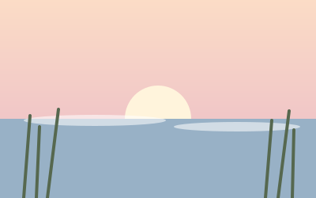

The ridge loop
Four miles of beech and birch, with a lake at the halfway point.
Walks · Autumn
Short walks with long views, chosen by readers who set out early and came back with muddy boots.
Four miles of beech and birch, with a lake at the halfway point.

Come before sunrise: the herons fish while the mist lifts.
Where to camp far from town lights, and what to pack for the cold.
“The best view is the one you walked to.” A reader, after the ridge loop